43. (Л) Налаштування кольорів, стилів, шрифтів, сітки, анотацій¶
Зміст лекції¶
- Оформлення: що головне на графіку
- Як задати колір
- Палітри для категорій
- Колір як акцент
- Прозорість і порядок шарів:
alpha,zorder - Власні колірні карти
- Нормування кольору:
BoundaryNorm,TwoSlopeNorm,LogNorm - Стилі ліній і маркерів
- Що всередині стилю
- Шрифти: розмір, насиченість, накреслення
- Сімейство шрифтів і власні шрифти
- Математичні формули: mathtext
- Заголовки, підзаголовки, примітки
- Довгі підписи поділок
- Сітка: основна і допоміжна
- Системи координат анотацій
- Стрілки:
arrowstyleіconnectionstyle - Текст у рамці:
bbox - Опорні лінії:
axhline,axvline,axline - Шрифти і текст у збережених файлах
- Приклад: графік до і після
- Типові помилки
- Підсумок
Оформлення: що головне на графіку¶
У лекції 37 ми познайомилися зі стилями, rcParams, циклом кольорів і простими анотаціями. Сьогодні розберемо ці інструменти глибше: як вибирати кольори, керувати шрифтами, налаштовувати сітку і підписувати важливе на графіку.
Усі ці налаштування служать одній меті — щоб читач побачив головне першим. Корисно уявляти графік як кілька шарів за важливістю:
| Шар | Що це | Як оформлювати |
|---|---|---|
| дані | лінії, стовпчики, точки | насичений колір, найтовщі лінії |
| акценти | підписи головного, стрілки, виділені точки | контрастний колір, жирний шрифт |
| контекст | осі, поділки, легенда | нейтральний, темно-сірий |
| допоміжне | сітка, рамка, фонові смуги | світло-сірий, тонкий, позаду даних |
Типова проблема графіка «за замовчуванням» — допоміжні елементи (рамка, сітка, легенда) мають таку саму вагу, як дані. Майже кожен прийом цієї лекції — це спосіб посилити один шар або послабити інший.
Як задати колір¶
Параметр color (а також facecolor, edgecolor, markerfacecolor тощо) приймає колір у кількох форматах:
import matplotlib.pyplot as plt
colors = [
("tab:blue", "Tableau palette"),
("crimson", "CSS name"),
("#2a9d8f", "hex RGB"),
("#2a9d8f80", "hex RGBA, 50% alpha"),
((0.9, 0.6, 0.1), "RGB tuple, 0..1"),
((0.9, 0.6, 0.1, 0.4), "RGBA tuple"),
("0.6", "gray level, 0=black 1=white"),
("C3", "4th color of the cycle"),
("xkcd:sky blue", "xkcd color survey"),
]
fig, ax = plt.subplots(figsize=(8, 4.2), layout="constrained")
for i, (color, note) in enumerate(colors):
y = len(colors) - i
ax.barh(y, 1, color=color, height=0.8)
ax.text(1.1, y, f"{color!r:<26}{note}", va="center", family="monospace")
ax.set_xlim(0, 4.2)
ax.set_axis_off()
plt.show()
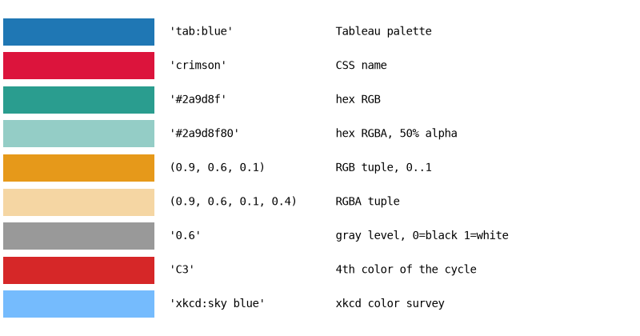
| Формат | Приклад | Коментар |
|---|---|---|
| назва з палітри Tableau | "tab:blue", "tab:red" |
10 кольорів циклу за замовчуванням |
| назва CSS | "crimson", "steelblue", "gold" |
близько 150 назв |
| hex | "#2a9d8f", "#2a9d8f80" |
як у вебі; дві останні цифри — прозорість |
| кортеж RGB(A) | (0.9, 0.6, 0.1) |
компоненти від 0 до 1, не від 0 до 255 |
| рядок з числом | "0.6" |
відтінок сірого; саме рядок, не число |
"CN" |
"C0", "C1" |
N-й колір поточного циклу кольорів |
xkcd: |
"xkcd:sky blue" |
~950 назв з опитування xkcd |
Перетворювати кольори між форматами вміє модуль matplotlib.colors:
from matplotlib import colors as mcolors
print(mcolors.to_hex("tab:blue"))
print(mcolors.to_rgb("crimson"))
print(mcolors.to_rgba("#2a9d8f", alpha=0.5))
print(mcolors.is_color_like("0.6"), mcolors.is_color_like(0.6))
# кортеж з компонентами 0..255 треба поділити на 255
rgb_255 = (42, 157, 143)
print(mcolors.to_hex([c / 255 for c in rgb_255]))
#1f77b4
(0.8627450980392157, 0.0784313725490196, 0.23529411764705882)
(0.16470588235294117, 0.615686274509804, 0.5607843137254902, 0.5)
True False
#2a9d8f
is_color_like(0.6) повертає False: число 0.6 matplotlib не вважає кольором, а рядок "0.6" — вважає.
Іменовані кольори в одному місці
Якщо графіків у проєкті багато, не розкидайте hex-коди по коду. Заведіть словник COLORS = {"income": "#2a9d8f", "expense": "#e76f51"} і беріть кольори з нього — тоді «дохід» буде одного кольору на всіх графіках.
Палітри для категорій¶
Для категорій (міста, платформи, групи) потрібні кольори, які легко розрізнити і жоден з яких не виглядає «важливішим». Такі набори кольорів називають якісними палітрами. Їх можна взяти з колірних карт tab10, Set2, Dark2 або задати самостійно.
Кольори якісної карти доступні через атрибут .colors, а з неперервної карти (viridis) можна взяти n рівномірно розподілених кольорів:
import matplotlib as mpl
import matplotlib.pyplot as plt
import numpy as np
# палітра Okabe-Ito: розрізняється людьми з порушенням кольорового зору
okabe_ito = ["#E69F00", "#56B4E9", "#009E73", "#F0E442",
"#0072B2", "#D55E00", "#CC79A7", "#000000"]
palettes = {
"tab10": mpl.colormaps["tab10"].colors,
"Set2": mpl.colormaps["Set2"].colors,
"Dark2": mpl.colormaps["Dark2"].colors,
"Okabe-Ito": okabe_ito,
"viridis, 6 colors": mpl.colormaps["viridis"](np.linspace(0, 1, 6)),
"Blues, 4 colors": mpl.colormaps["Blues"](np.linspace(0.35, 1, 4)),
}
fig, ax = plt.subplots(figsize=(8, 3.6), layout="constrained")
for row, (name, colors) in enumerate(palettes.items()):
for col, color in enumerate(colors):
ax.add_patch(plt.Rectangle((col, -row), 0.9, 0.8, color=color))
ax.text(-0.3, -row + 0.4, name, ha="right", va="center")
ax.set_xlim(-3.5, 10)
ax.set_ylim(-len(palettes) + 0.8, 0.9)
ax.set_axis_off()
plt.show()
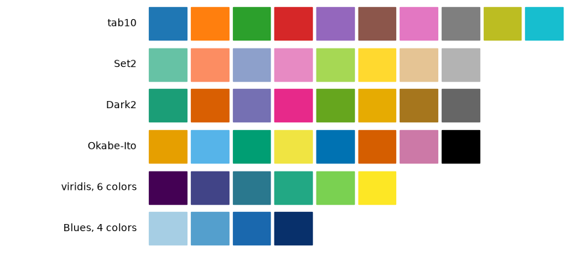
mpl.colormaps["tab10"]— об'єкт колірної карти;.colors— список її кольорів (лише для якісних карт);- неперервну карту можна викликати як функцію:
cmap(0.0)— перший колір,cmap(1.0)— останній;cmap(np.linspace(0, 1, 6))— 6 кольорів одним масивом; np.linspace(0.35, 1, 4)дляBlues— пропускаємо найсвітліші відтінки, бо на білому фоні вони майже невидимі.
Як вибирати:
| Дані | Палітра |
|---|---|
| категорії без порядку, до 6–8 штук | tab10, Set2, Dark2, Okabe-Ito |
| впорядковані категорії: «low / medium / high», роки, курси | відтінки однієї карти: Blues, viridis |
| більше 8 категорій | кольори вже не розрізняються — групуйте дрібні в «Other» або підписуйте прямо |
У matplotlib є готові стилі з палітрами, розрахованими на людей з порушенням кольорового зору: "tableau-colorblind10" і "petroff10". Вони змінюють лише цикл кольорів:
import matplotlib.pyplot as plt
import numpy as np
plt.style.use("petroff10")
x = np.linspace(0, 10, 100)
fig, ax = plt.subplots(figsize=(8, 4), layout="constrained")
for k in range(6):
ax.plot(x, np.sin(x + k * 0.5) + k, label=f"series {k + 1}", linewidth=2)
ax.legend(loc="upper left", bbox_to_anchor=(1, 1), frameon=False)
ax.set_title("petroff10 color cycle")
plt.show()
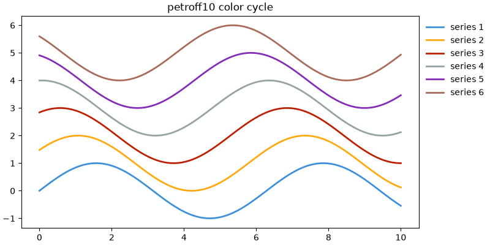
Перевірка без кольору
Простий тест: збережіть графік і перегляньте його в режимі відтінків сірого (або роздрукуйте). Якщо лінії злилися — додайте стилі ліній, маркери або прямі підписи (лекція 37).
Колір як акцент¶
Найсильніший прийом роботи з кольором — сірий фон і один яскравий колір. Читач миттєво бачить, про що графік, і не мусить звіряти кольори з легендою.
import matplotlib.pyplot as plt
import numpy as np
rng = np.random.default_rng(7)
years = np.arange(2015, 2026)
cities = ["Kyiv", "Lviv", "Odesa", "Dnipro", "Kharkiv", "Vinnytsia", "Poltava", "Rivne"]
# індекс вартості житла, 2015 = 100
prices = {
city: 100 * np.cumprod(1 + rng.normal(0.04, 0.05, size=len(years)))
for city in cities
}
prices["Lviv"] = 100 * np.cumprod(1 + rng.normal(0.11, 0.03, size=len(years)))
prices["Lviv"][0] = 100
highlight = "Lviv"
fig, ax = plt.subplots(figsize=(8, 4.2), layout="constrained")
for city, values in prices.items():
if city == highlight:
continue
ax.plot(years, values, color="0.75", linewidth=1.2)
values = prices[highlight]
ax.plot(years, values, color="tab:red", linewidth=2.8)
ax.annotate(highlight, xy=(years[-1], values[-1]), xytext=(6, 0),
textcoords="offset points", va="center",
color="tab:red", fontweight="bold")
ax.text(years[-1] + 0.2, 125, "other cities", color="0.5", va="center")
ax.spines[["top", "right"]].set_visible(False)
ax.set(title="Housing price index, 2015 = 100", xlabel="Year", ylabel="Index",
xlim=(years[0], years[-1] + 1.6), xticks=years[::2])
plt.show()
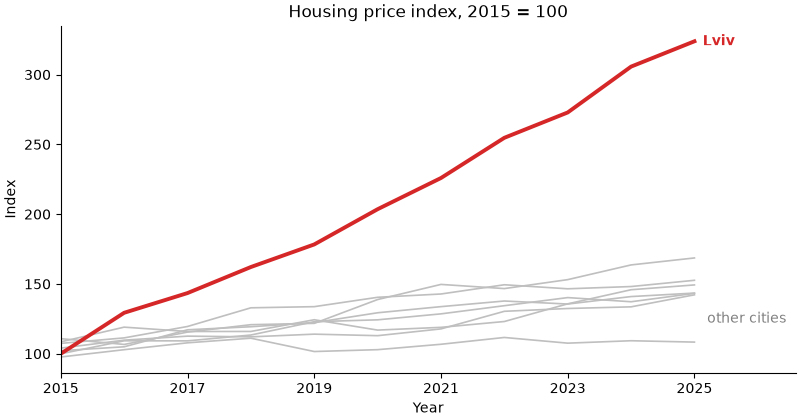
- спочатку малюємо «фонові» лінії сірим, потім — виділену. Те, що намальовано пізніше, опиняється зверху;
- замість легенди — прямий підпис виділеної лінії і один підпис «other cities» для всіх сірих;
- для стовпчиків той самий прийом робиться списком кольорів:
color=["tab:red" if c == highlight else "0.75" for c in cities](лекція 41).
Прозорість і порядок шарів: alpha, zorder¶
Кожен елемент графіка має zorder — номер шару. Елементи з більшим zorder малюються поверх елементів з меншим. Значення за замовчуванням:
| Елемент | zorder |
|---|---|
стовпчики, fill_between, axvspan, scatter |
1 |
| сітка і поділки осей | 1.5 |
лінії (plot, axhline) |
2 |
текст, annotate |
3 |
| легенда | 5 |
Якщо zorder однаковий, діє порядок виклику: пізніше — вище.
import matplotlib.pyplot as plt
import numpy as np
rng = np.random.default_rng(3)
x = np.arange(1, 31)
y = 50 + np.cumsum(rng.normal(0, 3, size=30))
i_min = np.argmin(y)
fig, (ax1, ax2) = plt.subplots(1, 2, figsize=(10, 3.8), layout="constrained")
for ax in (ax1, ax2):
ax.set(xlabel="Day", ylabel="Value")
# ліворуч: усе за замовчуванням
ax1.bar(x, y, color="tab:blue", alpha=0.3)
ax1.plot(x, y, color="tab:blue", marker="o", markersize=4)
ax1.scatter(x[i_min], y[i_min], s=150, color="tab:red")
ax1.grid(True, linewidth=2)
ax1.set_title("Default order")
# праворуч: явні шари
ax2.set_axisbelow(True)
ax2.grid(True, axis="y", color="0.9", linewidth=1)
ax2.bar(x, y, color="tab:blue", alpha=0.3, zorder=1)
ax2.plot(x, y, color="tab:blue", marker="o", markersize=4,
markerfacecolor="white", zorder=2)
ax2.scatter(x[i_min], y[i_min], s=150, color="tab:red",
edgecolors="white", linewidths=1.5, zorder=3)
ax2.set_title("Explicit layers")
plt.show()
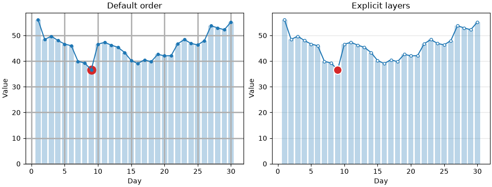
- ліворуч сітка (1.5) лежить поверх стовпчиків (1) і перекреслює їх, а лінія (2) проходить поверх червоної точки
scatter(1), хоча точку намальовано пізніше; ax.set_axisbelow(True)— сітка і поділки під усіма даними (уrcParams—axes.axisbelow);- праворуч
zorderзадано явно: стовпчики → лінія → виділена точка; markerfacecolor="white"— порожні маркери: лінія «проходить» крізь них, але не перекреслює;- біла обводка (
edgecolors="white") відокремлює виділену точку від лінії під нею.
alpha — прозорість від 0 (невидимий) до 1 (непрозорий). Вона корисна для перекриття (сотні точок scatter, кілька гістограм поверх), але має ціну: колір напівпрозорого стовпчика залежить від того, що під ним, і його складніше впізнати в легенді. Якщо потрібен лише світліший колір без перекриття, краще взяти світліший відтінок непрозорим кольором.
Власні колірні карти¶
Колірну карту можна створити з власних кольорів. Є два види:
ListedColormap— дискретний набір кольорів: рівно стільки кольорів, скільки передали;LinearSegmentedColormap.from_list— неперервний перехід через задані кольори.
import matplotlib.pyplot as plt
import numpy as np
from matplotlib.colors import LinearSegmentedColormap, ListedColormap
brand = LinearSegmentedColormap.from_list("brand", ["#f1faee", "#2a9d8f", "#264653"])
heat = LinearSegmentedColormap.from_list("heat", ["#2166ac", "white", "#b2182b"])
levels = ListedColormap(["#1a9850", "#fee08b", "#fc8d59", "#d73027"], name="levels")
gradient = np.linspace(0, 1, 256).reshape(1, -1)
fig, axs = plt.subplots(3, 1, figsize=(7, 2.6), layout="constrained")
for ax, cmap in zip(axs, [brand, heat, levels]):
ax.imshow(gradient, aspect="auto", cmap=cmap)
ax.set_axis_off()
ax.text(-0.01, 0.5, f"{type(cmap).__name__}: {cmap.name}",
transform=ax.transAxes, ha="right", va="center")
plt.show()
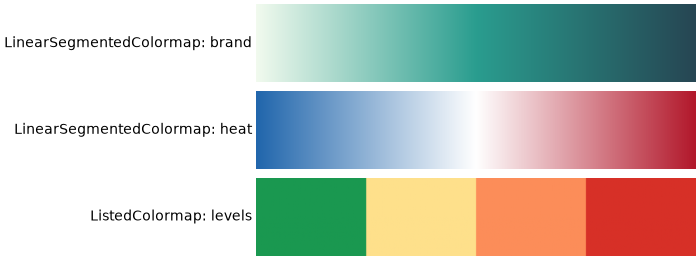
- у
from_listкольори розташовуються рівномірно: перший — у 0, останній — у 1, середній — у 0.5; heatз білим посередині — саморобна розбіжна карта;- обернену карту дає метод
.reversed(), а кількість кольорів неперервної карти можна обмежити.resampled(5).
Нормування кольору: BoundaryNorm, TwoSlopeNorm, LogNorm¶
Колір визначається у два кроки: спочатку нормування (norm) перетворює значення на число від 0 до 1, потім карта (cmap) перетворює це число на колір. За замовчуванням нормування лінійне: vmin → 0, vmax → 1. Змінивши norm, можна змінити, як значення розподіляються по кольорах.
norm |
Що робить | Коли |
|---|---|---|
Normalize(vmin, vmax) |
лінійно (за замовчуванням) | більшість випадків |
BoundaryNorm(bounds, ncolors) |
значення між межами → один колір | офіційні рівні: якість повітря, оцінки, ризик |
TwoSlopeNorm(vcenter=0) |
різні масштаби нижче і вище центру | розбіжна карта для несиметричних даних |
LogNorm() |
логарифмічно | значення від одиниць до мільйонів |
Дискретні рівні: BoundaryNorm¶
Індекс якості повітря (AQI) має офіційні межі: 0–50 — добре, 50–100 — помірно, 100–150 — шкідливо для чутливих, 150+ — шкідливо. Колір має показувати рівень, а не точне значення:
import matplotlib.pyplot as plt
import numpy as np
from matplotlib.colors import BoundaryNorm, ListedColormap
rng = np.random.default_rng(11)
days = ["Mon", "Tue", "Wed", "Thu", "Fri", "Sat", "Sun"]
hours = np.arange(24)
# індекс якості повітря: пік у години пік, вихідні чистіші
rush = 70 * np.exp(-((hours - 8) / 2) ** 2) + 100 * np.exp(-((hours - 18) / 2.5) ** 2)
weekday_factor = np.array([1, 1, 1.1, 1, 1.4, 0.6, 0.5]).reshape(-1, 1)
aqi = 30 + weekday_factor * rush + rng.normal(0, 8, size=(7, 24))
bounds = [0, 50, 100, 150, 200]
cmap = ListedColormap(["#1a9850", "#fee08b", "#fc8d59", "#d73027"])
norm = BoundaryNorm(bounds, ncolors=cmap.N)
fig, ax = plt.subplots(figsize=(10, 3.6), layout="constrained")
im = ax.imshow(aqi, cmap=cmap, norm=norm, aspect="auto")
cbar = fig.colorbar(im, ax=ax, ticks=bounds)
cbar.set_label("AQI")
ax.set_yticks(range(7), days)
ax.set_xticks(hours[::2])
ax.set(title="Air quality index by hour", xlabel="Hour")
plt.show()
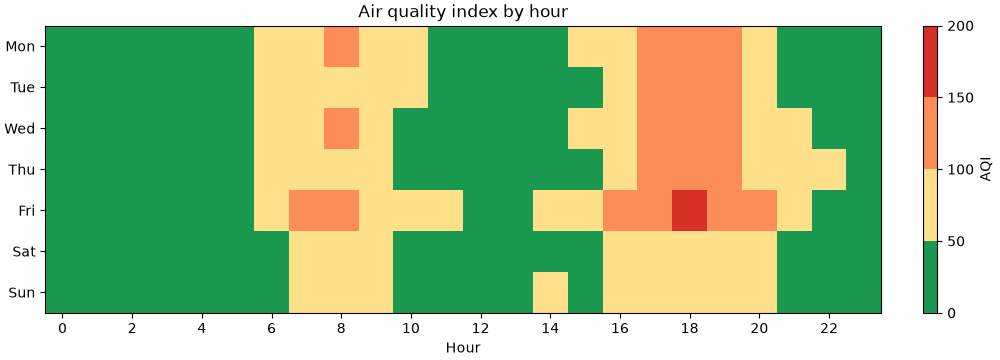
ListedColormapз 4 кольорів і 5 меж: значення в[0, 50)отримують перший колір,[50, 100)— другий і так далі;ncolors=cmap.N— кількість кольорів у карті; має відповідати кількості інтервалів;colorbarсам стає «сходинками», аticks=boundsставить поділки точно на межах.
Порівняйте з неперервною картою: там 99 і 101 мають майже однаковий колір, хоча належать до різних рівнів.
Несиметричний центр: TwoSlopeNorm¶
У лекції 39 для розбіжної карти ми задавали симетричні межі vmin=-a, vmax=a. Але якщо дані від −10 до +60, симетрична шкала витрачає половину кольорів на значення, яких немає. TwoSlopeNorm ставить білий колір у центр, а синю і червону частини розтягує незалежно:
import matplotlib.pyplot as plt
import numpy as np
from matplotlib.colors import TwoSlopeNorm
rng = np.random.default_rng(12)
stores = [f"Store {i}" for i in range(1, 9)]
months = ["Jan", "Feb", "Mar", "Apr", "May", "Jun",
"Jul", "Aug", "Sep", "Oct", "Nov", "Dec"]
# прибуток, тис. грн: більшість місяців прибуткові, кілька збиткових
profit = rng.normal(20, 15, size=(8, 12))
profit[2, :4] -= 30
profit[6, 6:] += 35
norm = TwoSlopeNorm(vmin=profit.min(), vcenter=0, vmax=profit.max())
fig, ax = plt.subplots(figsize=(10, 4), layout="constrained")
im = ax.imshow(profit, cmap="RdBu", norm=norm, aspect="auto")
fig.colorbar(im, ax=ax, label="Profit, thousand UAH")
ax.set_xticks(range(12), months)
ax.set_yticks(range(8), stores)
ax.set_title("Monthly profit by store")
plt.show()
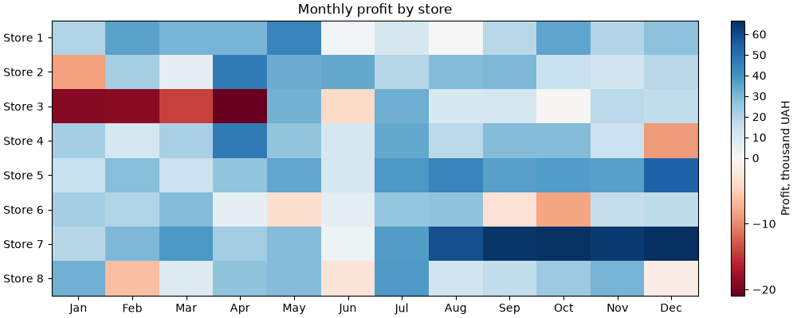
- збиток (від'ємні значення) — червоний, прибуток — синій, нуль — білий;
- шкала
colorbarнерівномірна: нижня частина коротша за значеннями, але займає половину висоти. Це чесно щодо знака, але не щодо величини: −20 виглядає так само насичено, як +65. Якщо важлива саме величина, використовуйте симетричніvmin=-a, vmax=a.
LogNorm використовують так само — norm=LogNorm(vmin=1, vmax=1e6). Він потрібен, коли в даних кілька порядків величини (населення міст, кількість переглядів): з лінійним нормуванням усі значення, крім найбільших, мали б однаковий колір.
Стилі ліній і маркерів¶
Крім готових "-", "--", ":", "-.", штрихи лінії можна задати кортежем (offset, (on, off, on, off, ...)) — довжини штрихів і пропусків у пунктах:
import matplotlib.pyplot as plt
import numpy as np
x = np.linspace(0, 10, 11)
styles = [
("'-'", dict(linestyle="-")),
("'--'", dict(linestyle="--")),
("(0, (1, 1))", dict(linestyle=(0, (1, 1)))),
("(0, (8, 2, 1, 2))", dict(linestyle=(0, (8, 2, 1, 2)))),
("marker='o', mfc='white'", dict(marker="o", markerfacecolor="white")),
("marker='s', markevery=3", dict(marker="s", markevery=3)),
("marker='D', ms=8, mec='black'", dict(marker="D", markersize=8, markeredgecolor="black")),
("drawstyle='steps-mid'", dict(drawstyle="steps-mid")),
]
fig, ax = plt.subplots(figsize=(8, 4.2), layout="constrained")
for i, (label, kwargs) in enumerate(styles):
y = len(styles) - i
ax.plot(x, np.full_like(x, y) + 0.15 * np.sin(x), color="tab:blue",
linewidth=2, **kwargs)
ax.text(10.5, y, label, va="center", family="monospace")
ax.set_xlim(-0.5, 18)
ax.set_axis_off()
plt.show()
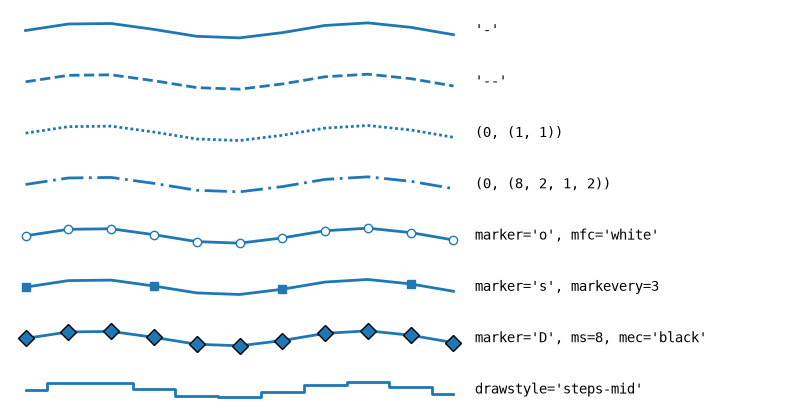
| Параметр | Скорочення | Що задає |
|---|---|---|
linestyle |
ls |
штрихи лінії |
linewidth |
lw |
товщина, пункти |
marker |
форма маркера: "o", "s", "^", "D", "x", "+" |
|
markersize |
ms |
розмір маркера |
markerfacecolor |
mfc |
заливка маркера |
markeredgecolor |
mec |
обводка маркера |
markeredgewidth |
mew |
товщина обводки |
markevery |
маркер на кожній N-й точці — для довгих рядів | |
drawstyle |
ds |
"steps-pre", "steps-mid", "steps-post" — сходинки |
markevery корисний, коли точок сотні: маркер на кожній точці зливається в товсту лінію, а маркер на кожній 20-й допомагає розрізнити лінії на чорно-білому друку.
Що всередині стилю¶
Стиль — це словник параметрів rcParams. Подивитися, що саме змінює стиль, можна через plt.style.library:
import matplotlib.pyplot as plt
for key, value in plt.style.library["ggplot"].items():
print(f"{key:24} {value}")
axes.axisbelow True
axes.edgecolor white
axes.facecolor #E5E5E5
axes.grid True
axes.labelcolor #555555
axes.labelsize large
axes.linewidth 1.0
axes.prop_cycle cycler('color', ['#E24A33', '#348ABD', '#988ED5', '#777777', '#FBC15E', '#8EBA42', '#FFB5B8'])
axes.titlesize x-large
figure.edgecolor 0.50
figure.facecolor white
font.size 10.0
grid.color white
grid.linestyle -
patch.antialiased True
patch.edgecolor #EEEEEE
patch.facecolor #348ABD
patch.linewidth 0.5
xtick.color #555555
xtick.direction out
ytick.color #555555
ytick.direction out
Стиль змінює лише перелічені параметри — решта лишається як була. Тому стилі можна накладати. Наприклад, стилі seaborn-v0_8-paper, -notebook, -talk, -poster не змінюють кольорів і фону, а лише розміри шрифтів, ліній і фігури — під статтю, ноутбук, доповідь, плакат:
import matplotlib.pyplot as plt
for context in ["paper", "notebook", "talk", "poster"]:
params = plt.style.library[f"seaborn-v0_8-{context}"]
print(f"{context:9} axes.titlesize={params['axes.titlesize']:<5} "
f"xtick.labelsize={params['xtick.labelsize']:<5} "
f"lines.linewidth={params['lines.linewidth']}")
paper axes.titlesize=9.6 xtick.labelsize=8.0 lines.linewidth=1.4
notebook axes.titlesize=12.0 xtick.labelsize=10.0 lines.linewidth=1.75
talk axes.titlesize=15.6 xtick.labelsize=13.0 lines.linewidth=2.275
poster axes.titlesize=19.2 xtick.labelsize=16.0 lines.linewidth=2.8
Поєднання «оформлення + масштаб» для слайдів:
import matplotlib.pyplot as plt
import numpy as np
x = np.linspace(0, 10, 100)
with plt.style.context(["seaborn-v0_8-whitegrid", "seaborn-v0_8-talk"]):
fig, ax = plt.subplots(figsize=(8, 4.5), layout="constrained")
ax.plot(x, np.sin(x), label="sin")
ax.plot(x, np.cos(x), label="cos")
ax.set(title="Readable from the back row", xlabel="x")
ax.legend()
plt.show()
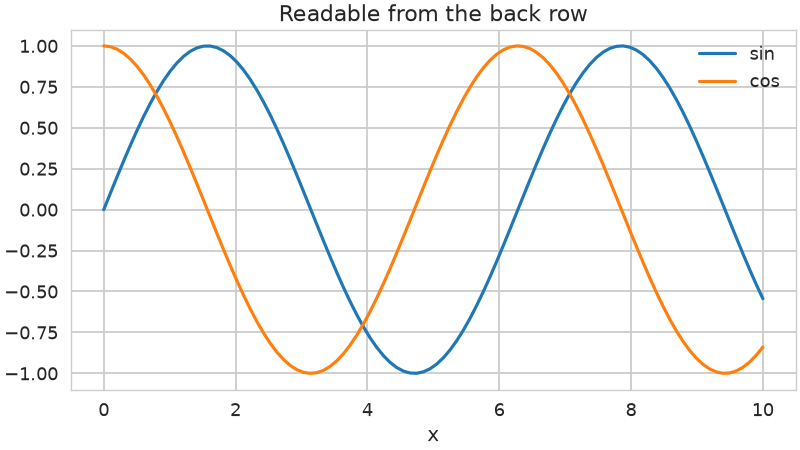
Щоб знайти потрібний ключ rcParams, відфільтруйте словник за префіксом:
import matplotlib.pyplot as plt
for key, value in plt.rcParams.items():
if key.startswith("grid."):
print(f"{key:22} {value}")
grid.alpha 1.0
grid.color #b0b0b0
grid.linestyle -
grid.linewidth 0.8
grid.major.alpha None
grid.major.color None
grid.major.linestyle None
grid.major.linewidth None
grid.minor.alpha None
grid.minor.color None
grid.minor.linestyle None
grid.minor.linewidth None
None у grid.major.* і grid.minor.* означає «взяти загальне значення grid.*». Ці ключі з'явилися в matplotlib 3.11 — у старіших версіях їх не буде.
Повний список параметрів з коментарями — у файлі matplotlibrc; шлях до нього повертає matplotlib.matplotlib_fname().
Шрифти: розмір, насиченість, накреслення¶
Кожен текстовий елемент (set_title, set_xlabel, text, annotate, legend) приймає параметри шрифту:
| Параметр | Значення |
|---|---|
fontsize (size) |
число в пунктах або "xx-small", "small", "medium", "large", "x-large", ... |
fontweight (weight) |
"light", "normal", "semibold", "bold" або число 100–900 |
fontstyle (style) |
"normal", "italic" |
fontfamily (family) |
"sans-serif", "serif", "monospace" або назва шрифту |
color |
колір тексту |
import matplotlib.pyplot as plt
samples = [
dict(fontsize="small"),
dict(fontsize="medium"),
dict(fontsize="x-large"),
dict(fontsize=18),
dict(fontweight="light"),
dict(fontweight="bold"),
dict(fontstyle="italic"),
dict(fontfamily="serif"),
dict(fontfamily="monospace"),
dict(color="0.5"),
]
fig, ax = plt.subplots(figsize=(8, 4.6), layout="constrained")
for i, props in enumerate(samples):
y = 1 - i / len(samples)
ax.text(0, y, "Sales report 2025", va="top", **props)
ax.text(0.5, y, str(props), va="top", family="monospace", fontsize=9, color="0.4")
ax.set_axis_off()
plt.show()
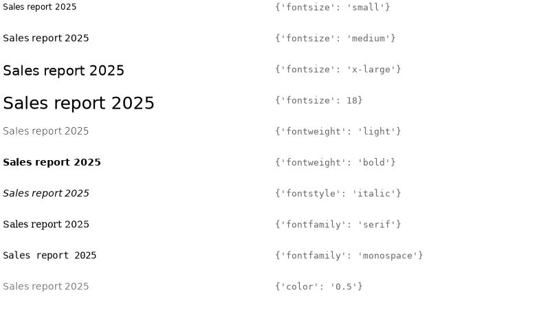
Відносні розміри ("small", "large") обчислюються від rcParams["font.size"]: "large" — це 1.2 × font.size, "x-large" — 1.44 × font.size. Якщо всі підписи задані відносно, то зміна одного font.size пропорційно масштабує весь графік.
Щоб не повторювати ті самі параметри для кожного підпису, їх збирають у словник і розпаковують:
import matplotlib.pyplot as plt
label_font = {"fontsize": 11, "color": "0.3"}
title_font = {"fontsize": 14, "fontweight": "bold", "loc": "left"}
fig, ax = plt.subplots(figsize=(6, 3.5), layout="constrained")
ax.plot([2021, 2022, 2023, 2024, 2025], [12, 15, 14, 19, 23], marker="o")
ax.set_title("Active users, thousands", **title_font)
ax.set_xlabel("Year", **label_font)
ax.set_ylabel("Users", **label_font)
ax.set_xticks([2021, 2022, 2023, 2024, 2025])
plt.show()
Розмір і колір підписів поділок задаються не в set_xticks, а через tick_params: ax.tick_params(axis="both", labelsize=9, labelcolor="0.4").
Сімейство шрифтів і власні шрифти¶
fontfamily="sans-serif" — це не конкретний шрифт, а сімейство. Яким шрифтом воно буде намальоване, визначає список rcParams["font.sans-serif"]: matplotlib бере перший шрифт зі списку, який є в системі.
import matplotlib.pyplot as plt
from matplotlib import font_manager
print(plt.rcParams["font.family"])
print(plt.rcParams["font.sans-serif"][:4])
# який файл шрифту реально буде використано
print(font_manager.findfont(font_manager.FontProperties(family=["sans-serif"])))
# які шрифти знає matplotlib
names = sorted({f.name for f in font_manager.fontManager.ttflist})
print(len(names), names[:5])
['sans-serif']
['DejaVu Sans', 'Bitstream Vera Sans', 'Computer Modern Sans Serif', 'Lucida Grande']
/home/user/env/lib/python3.13/site-packages/matplotlib/mpl-data/fonts/ttf/DejaVuSans.ttf
48 ['C059', 'Caladea', 'Carlito', 'D050000L', 'DejaVu Math TeX Gyre']
Вивід залежить від системи: на іншому комп'ютері буде інша кількість шрифтів і інші назви.
Змінити шрифт для всього скрипта — поставити бажаний шрифт на початок списку. Інші елементи списку лишаються як запасні, якщо потрібного шрифту немає:
import matplotlib.pyplot as plt
plt.rcParams["font.family"] = "sans-serif"
plt.rcParams["font.sans-serif"] = ["Liberation Sans", "Arial", "DejaVu Sans"]
fig, ax = plt.subplots()
ax.plot([1, 2, 3], [2, 1, 3])
ax.set_title("Liberation Sans if installed, otherwise Arial or DejaVu Sans")
plt.show()
Шрифт, якого немає в системі (наприклад, завантажений файл .ttf у теці проєкту), реєструється через fontManager.addfont. Для прикладу візьмемо один із шрифтів, що постачаються разом з matplotlib:
from pathlib import Path
import matplotlib as mpl
import matplotlib.pyplot as plt
from matplotlib import font_manager
# у реальному проєкті: Path("fonts/MyFont-Regular.ttf")
font_path = Path(mpl.get_data_path()) / "fonts" / "ttf" / "DejaVuSerif.ttf"
font_manager.fontManager.addfont(font_path)
font_name = font_manager.FontProperties(fname=font_path).get_name()
print(font_name)
plt.rcParams["font.family"] = font_name
fig, ax = plt.subplots()
ax.plot([1, 2, 3], [2, 1, 3])
ax.set_title(f"Font: {font_name}")
plt.show()
addfontдодає шрифт до списку відомих matplotlib на час роботи скрипта;FontProperties(fname=...).get_name()— назва шрифту, записана всередині файлу; саме її, а не ім'я файлу, треба передавати вfont.family.
Кирилиця і квадратики
Не кожен шрифт містить кириличні літери. Якщо шрифт їх не має, matplotlib намалює порожні прямокутники і виведе попередження Glyph ... missing from font(s). Шрифт за замовчуванням DejaVu Sans кирилицю підтримує; для інших шрифтів перевіряйте це перед тим, як робити підписи українською у власних звітах.
Математичні формули: mathtext¶
Текст між знаками $...$ matplotlib розбирає як формулу у синтаксисі LaTeX. Встановлювати LaTeX для цього не потрібно — matplotlib має вбудований інтерпретатор mathtext:
import matplotlib.pyplot as plt
import numpy as np
x = np.linspace(0, 4, 300)
tau = 1.2
fig, ax = plt.subplots(figsize=(8, 4), layout="constrained")
for f in [1, 2]:
ax.plot(x, np.exp(-x / tau) * np.sin(2 * np.pi * f * x), label=rf"$f = {f}\,\mathrm{{Hz}}$")
ax.set_title(r"Damped oscillation: $y = e^{-t/\tau}\,\sin(2\pi f t)$, $\tau = 1.2$ s")
ax.set(xlabel=r"$t$, s", ylabel=r"$y$")
ax.text(2.5, 0.6, r"$\sigma^2 = \frac{1}{n}\sum_{i=1}^{n}(x_i - \bar{x})^2$", fontsize=13)
ax.legend()
plt.show()
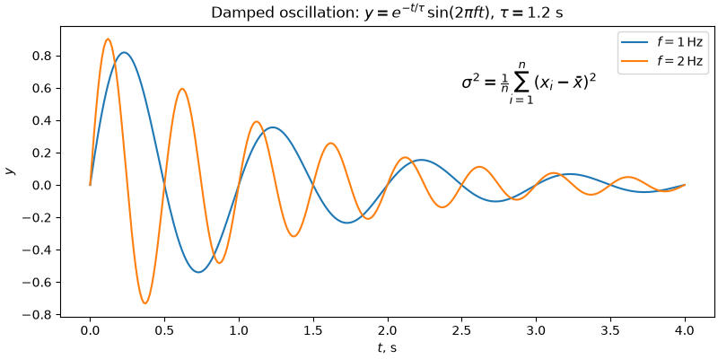
- рядки з формулами пишіть як raw-рядки
r"...": інакше\tу\tauPython перетворить на символ табуляції; ^— верхній індекс,_— нижній,{...}— групування:e^{-t/\tau};\frac{a}{b},\sum,\sqrt{x},\bar{x}, грецькі літери\alpha,\mu,\sigma,\pi;\,— короткий пробіл,\mathrm{Hz}— прямий (не курсивний) текст усередині формули;- в f-рядку
rf"..."фігурні дужки формули треба подвоювати:{{Hz}}, бо одинарні{}f-рядок сприймає як підстановку.
Вигляд формул задає rcParams["mathtext.fontset"]: "dejavusans" (за замовчуванням, як основний текст), "cm" (класичний шрифт LaTeX), "stix" (схожий на Times). Для повноцінного LaTeX є rcParams["text.usetex"] = True, але тоді LaTeX має бути встановлений у системі.
Заголовки, підзаголовки, примітки¶
Графік для звіту часто має заголовок-висновок, сірий підзаголовок з поясненням, що показано, і примітку з джерелом даних:
import matplotlib.pyplot as plt
import numpy as np
months = ["Jan", "Feb", "Mar", "Apr", "May", "Jun",
"Jul", "Aug", "Sep", "Oct", "Nov", "Dec"]
online = np.array([18, 19, 21, 22, 24, 27, 29, 30, 31, 33, 36, 41])
fig, ax = plt.subplots(figsize=(8, 4.4), layout="constrained")
ax.plot(months, online, marker="o", color="tab:blue", linewidth=2.5)
fig.suptitle("Online sales share doubled in a year", x=0.02, ha="left",
fontsize=15, fontweight="bold")
ax.set_title("Share of online orders, % of all orders, 2025", loc="left",
color="0.4", fontsize=11, pad=12)
fig.text(0.02, 0.01, "Source: company CRM export, 12 stores", fontsize=8, color="0.5")
ax.spines[["top", "right"]].set_visible(False)
ax.set_ylim(0, 45)
ax.set_ylabel("%")
fig.get_layout_engine().set(h_pad=0.15)
plt.show()
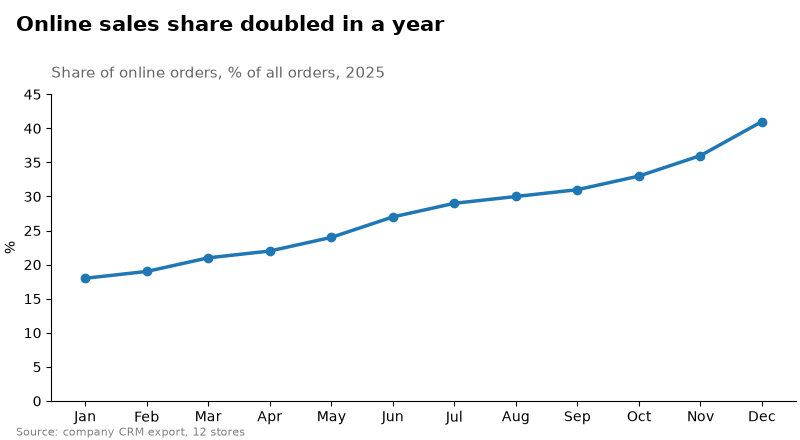
fig.suptitle— заголовок усієї фігури;x=0.02, ha="left"вирівнює його ліворуч;ax.set_title(..., loc="left")— заголовок надAxesз лівого краю;pad— відступ від рамки в пунктах. Можна навіть мати три заголовки одночасно:loc="left","center","right";fig.text(x, y, ...)— текст у координатах фігури:(0, 0)— лівий нижній кут,(1, 1)— правий верхній;fig.get_layout_engine().set(h_pad=...)— додатковий вертикальний відступ уconstrained-компонуванні, щоб примітка не налізала на підпис осі.
Заголовок-висновок («Online sales share doubled in a year») корисніший за заголовок-опис («Online sales by month»): читач одразу знає, що шукати на графіку.
Довгі підписи поділок¶
Довгі назви категорій під стовпчиками налізають одна на одну. Поворот на 90° вирішує проблему, але читати збоку незручно. Кращі варіанти:
import matplotlib.pyplot as plt
courses = ["Python Basics", "Data Structures", "Databases and SQL",
"Web Development", "Machine Learning", "Computer Networks"]
students = [124, 98, 87, 112, 76, 54]
fig, (ax1, ax2) = plt.subplots(1, 2, figsize=(11, 4), layout="constrained")
# поворот на 30 градусів із прив'язкою правого краю до поділки
ax1.bar(courses, students, color="tab:blue")
ax1.set_xticks(range(len(courses)), courses, rotation=30, ha="right",
rotation_mode="anchor")
ax1.set_title("rotation=30, ha='right'")
# горизонтальні стовпчики: підписи читаються без повороту
ax2.barh(courses, students, color="tab:blue")
ax2.invert_yaxis()
ax2.set_title("barh")
plt.show()
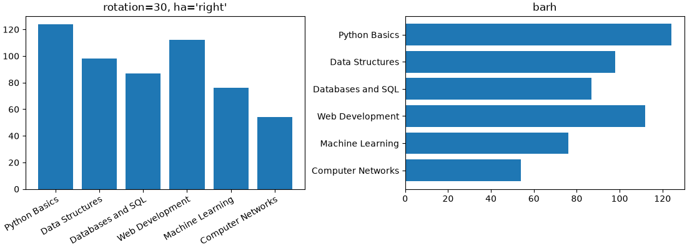
- без
ha="right"центр повернутого підпису стоїть під поділкою, і підпис «з'їжджає» на сусідній стовпчик; rotation_mode="anchor"— спочатку вирівнювання, потім поворот навколо точки прив'язки; підпис закінчується точно під своєю поділкою;- для довгих назв
barhмайже завжди кращий: текст горизонтальний, місця для нього — скільки завгодно.
Сітка: основна і допоміжна¶
Сітка допомагає зчитувати значення, але має бути найслабшим елементом графіка. Основні налаштування:
| Виклик | Що робить |
|---|---|
ax.grid(True) |
сітка за основними поділками обох осей |
ax.grid(axis="y") |
лише горизонтальні лінії |
ax.grid(which="minor") |
сітка за допоміжними поділками |
ax.grid(color=..., linestyle=..., linewidth=..., alpha=...) |
вигляд ліній |
ax.minorticks_on() |
увімкнути допоміжні поділки |
ax.set_axisbelow(True) |
сітка під даними |
import matplotlib.pyplot as plt
import numpy as np
from matplotlib.ticker import MultipleLocator
rng = np.random.default_rng(5)
t = np.arange(0, 60)
temperature = 20 + 15 * (1 - np.exp(-t / 12)) + rng.normal(0, 0.4, size=60)
fig, (ax1, ax2) = plt.subplots(1, 2, figsize=(11, 4), layout="constrained")
for ax in (ax1, ax2):
ax.plot(t, temperature, color="tab:red", linewidth=2)
ax.set(xlabel="Time, min", ylabel="Temperature, C")
ax1.grid(True)
ax1.set_title("ax.grid(True)")
# основні поділки кожні 10 хв і 5 C, допоміжні - кожні 2 хв і 1 C
ax2.xaxis.set_major_locator(MultipleLocator(10))
ax2.xaxis.set_minor_locator(MultipleLocator(2))
ax2.yaxis.set_major_locator(MultipleLocator(5))
ax2.yaxis.set_minor_locator(MultipleLocator(1))
ax2.grid(which="major", color="0.8", linewidth=0.9)
ax2.grid(which="minor", color="0.92", linewidth=0.6)
ax2.tick_params(which="minor", length=2, color="0.6")
ax2.set_axisbelow(True)
ax2.spines[:].set_visible(False)
ax2.set_title("Major + minor grid, no frame")
plt.show()
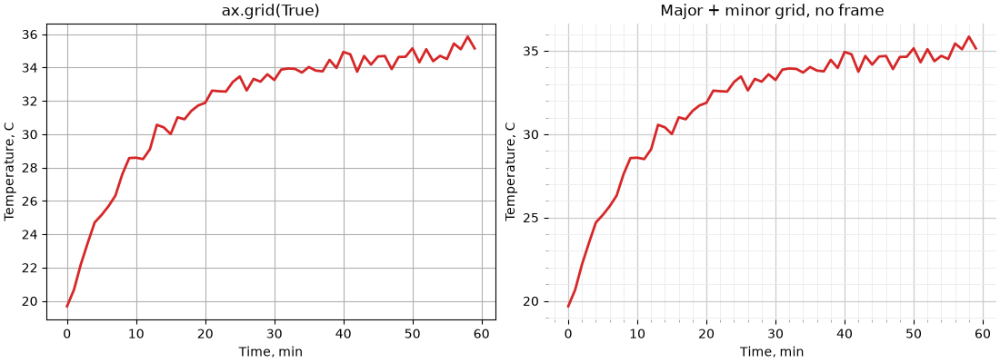
MultipleLocator(n)ставить поділки кратніn(локатори — лекція 37); допоміжні поділки задаєset_minor_locator;grid(which="major")іgrid(which="minor")налаштовуються окремо: допоміжна сітка світліша і тонша;- без рамки (
spines[:].set_visible(False)) сітка сама задає межі області графіка.
Яку сітку обирати:
| Графік | Сітка |
|---|---|
| вертикальні стовпчики | лише axis="y" — порівнюються висоти |
| горизонтальні стовпчики | лише axis="x" |
| лінійний графік, де важливі значення | обидві осі, світла |
є підписи значень (bar_label) |
сітка не потрібна |
теплова карта, imshow |
вимкнути: ax.grid(False) |
| логарифмічна вісь | допоміжна сітка (which="minor") показує 2, 3, ..., 9 між степенями 10 |
Для всього скрипта сітку вмикають через rcParams: axes.grid, axes.grid.axis ("both", "x", "y"), axes.grid.which, grid.color, grid.linewidth.
Системи координат анотацій¶
У лекції 37 ми вказували стрілкою на точку даних через annotate(text, xy, xytext, arrowprops). Параметри xycoords і textcoords визначають, в яких одиницях задані xy і xytext:
| Значення | Одиниці | Коли |
|---|---|---|
"data" (за замовчуванням) |
координати даних | точка на графіку |
"axes fraction" |
частки Axes: (0, 0) — лівий нижній кут, (1, 1) — правий верхній |
текст у куті графіка, незалежно від даних |
"figure fraction" |
частки фігури | текст відносно всієї фігури |
"offset points" |
зсув від xy у пунктах |
підпис поруч із точкою |
ax.get_xaxis_transform() |
x — дані, y — частки Axes |
підпис вертикальної лінії біля верхнього краю |
ax.get_yaxis_transform() |
x — частки Axes, y — дані |
підпис горизонтальної лінії біля правого краю |
Останні два варіанти — змішані (blended) координати. Вони дуже зручні для подій на часовій осі: дата події відома (x у даних), а висота підпису — «біля верху графіка», незалежно від масштабу y.
import matplotlib.pyplot as plt
import numpy as np
rng = np.random.default_rng(21)
days = np.arange(1, 91)
visits = 1200 + 6 * days + rng.normal(0, 60, size=90)
visits[30:37] += np.array([900, 700, 450, 300, 180, 90, 40]) # рекламна кампанія
visits[61:64] -= 800 # збій сервера
events = {31: "Ad campaign", 62: "Server outage"}
fig, ax = plt.subplots(figsize=(10, 4.2), layout="constrained")
ax.plot(days, visits, color="tab:blue")
for day, label in events.items():
ax.axvline(day, color="0.5", linestyle="--", linewidth=1)
# x - дата події, y - 97% висоти Axes
ax.annotate(label, xy=(day, 0.97), xycoords=ax.get_xaxis_transform(),
xytext=(4, 0), textcoords="offset points", va="top", color="0.3")
# точка даних і текст поруч зі зсувом
i_min = np.argmin(visits)
ax.annotate(f"min: {visits[i_min]:.0f}", xy=(days[i_min], visits[i_min]),
xytext=(30, -30), textcoords="offset points", ha="left",
arrowprops={"arrowstyle": "->"})
# підпис у куті графіка
ax.annotate("Daily visits, 90 days", xy=(0.01, 0.02), xycoords="axes fraction",
fontsize=9, color="0.5")
ax.set(xlabel="Day", ylabel="Visits", ylim=(0, None))
ax.spines[["top", "right"]].set_visible(False)
plt.show()
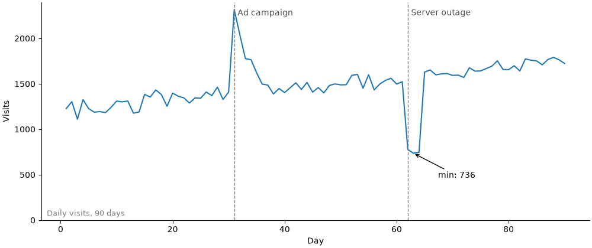
- підписи подій прив'язані до верху графіка: якщо змінити
ylim, вони не зсунуться і не вийдуть за межі; xytext=(30, -30)зtextcoords="offset points"— текст на 30 пунктів правіше і 30 нижче за точку. Зсув у пунктах не залежить від масштабу осей, тому підпис не «відлетить» при зміні даних;xycoords="axes fraction"— корисно для приміток і позначок(a),(b)у кутах підграфіків.
Стрілки: arrowstyle і connectionstyle¶
Словник arrowprops керує виглядом стрілки. Два головні ключі: arrowstyle — форма наконечника, connectionstyle — форма лінії від тексту до точки.
import matplotlib.pyplot as plt
arrowstyles = ["-", "->", "-|>", "<->", "]-", "|-|", "fancy", "wedge"]
connections = ["arc3", "arc3,rad=0.3", "arc3,rad=-0.3",
"angle3,angleA=0,angleB=90", "angle,angleA=0,angleB=90,rad=5",
"angle3,angleA=90,angleB=0"]
fig, (ax1, ax2) = plt.subplots(1, 2, figsize=(11, 4.6), layout="constrained")
for i, style in enumerate(arrowstyles):
y = len(arrowstyles) - i
ax1.annotate("", xy=(0.95, y), xytext=(0.45, y),
arrowprops={"arrowstyle": style, "color": "tab:blue", "lw": 1.5})
ax1.text(0.4, y, repr(style), ha="right", va="center", family="monospace")
ax1.set(xlim=(0, 1), ylim=(0.3, len(arrowstyles) + 0.7), title="arrowstyle")
for i, conn in enumerate(connections):
row, col = divmod(i, 2)
x0, y0 = col * 1.0, -row * 1.0
ax2.plot(x0 + 0.85, y0 + 0.1, "o", color="tab:red")
ax2.annotate("", xy=(x0 + 0.85, y0 + 0.1), xytext=(x0 + 0.1, y0 + 0.6),
arrowprops={"arrowstyle": "->", "connectionstyle": conn,
"color": "tab:blue", "lw": 1.5})
ax2.text(x0 + 0.05, y0 + 0.78, conn, fontsize=8, family="monospace")
ax2.set(xlim=(0, 2), ylim=(-2.1, 1), title="connectionstyle")
for ax in (ax1, ax2):
ax.set_xticks([])
ax.set_yticks([])
plt.show()
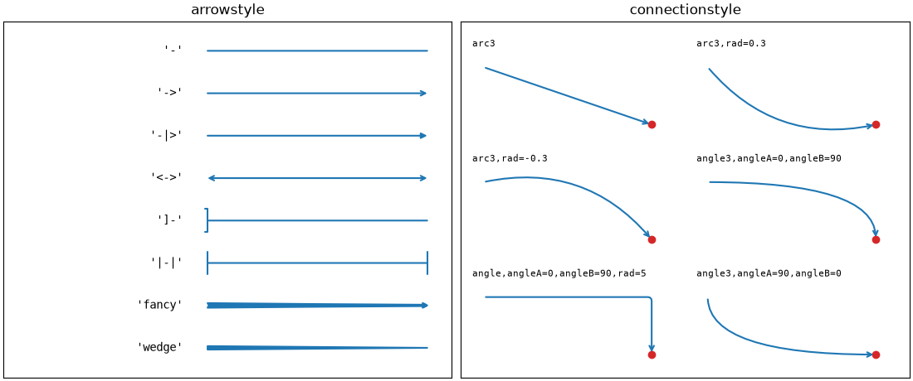
annotate("", ...)з порожнім текстом — просто стрілка відxytextдоxy;"arc3,rad=0.3"— дуга; знакradзадає, в який бік вона вигинається. Дуга корисна, щоб стрілка обійшла лінію графіка, а не перетинала її;"angle,angleA=0,angleB=90"— ламана з прямим кутом, як у схемах;- інші ключі
arrowprops:color,lw(товщина),shrinkA/shrinkB— відступ стрілки від тексту і від точки в пунктах.
Текст у рамці: bbox¶
Параметр bbox малює рамку навколо тексту. Рамка з білою заливкою робить текст читабельним, навіть якщо під ним лінії графіка або сітка:
import matplotlib.pyplot as plt
import numpy as np
rng = np.random.default_rng(8)
x = np.linspace(0, 10, 200)
y = np.sin(x) + rng.normal(0, 0.15, size=200)
fig, ax = plt.subplots(figsize=(9, 4), layout="constrained")
ax.plot(x, y, color="tab:blue", alpha=0.7)
ax.grid(True, color="0.85")
boxes = [
(1.0, "round", {"boxstyle": "round", "fc": "white", "ec": "0.5"}),
(3.5, "round,pad=0.5", {"boxstyle": "round,pad=0.5", "fc": "#fff3cd", "ec": "#e0a800"}),
(6.0, "square", {"boxstyle": "square", "fc": "white", "ec": "none", "alpha": 0.85}),
(8.5, "larrow", {"boxstyle": "larrow", "fc": "tab:red", "ec": "none"}),
]
for xpos, label, props in boxes:
color = "white" if props["fc"] == "tab:red" else "black"
# текст прямо на лінії: рамка з заливкою закриває лінію під текстом
ax.text(xpos, np.sin(xpos), label, ha="center", va="center", bbox=props, color=color)
ax.set_title("Text with bbox")
plt.show()
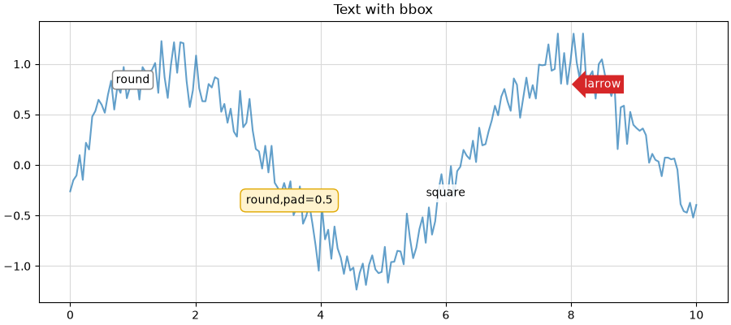
Ключ bbox |
Що задає |
|---|---|
boxstyle |
форма: "square", "round", "round4", "sawtooth", "larrow", "rarrow"; через кому — pad=0.5 |
fc (facecolor) |
заливка |
ec (edgecolor) |
рамка; "none" — без рамки |
alpha |
прозорість рамки |
lw |
товщина рамки |
Для annotate рамка задається тим самим bbox=..., і стрілка тоді починається від краю рамки.
Опорні лінії: axhline, axvline, axline¶
Опорна лінія дає читачеві точку порівняння: середнє, план, норму, y = x.
| Метод | Лінія |
|---|---|
ax.axhline(y) |
горизонтальна на всю ширину |
ax.axvline(x) |
вертикальна на всю висоту |
ax.axline((x1, y1), (x2, y2)) |
нескінченна пряма через дві точки |
ax.axline((x1, y1), slope=k) |
нескінченна пряма через точку з нахилом k |
Приклад: прогноз і факт. Точки на діагоналі y = x — ідеальний прогноз; вище — недооцінка, нижче — переоцінка:
import matplotlib.pyplot as plt
import numpy as np
rng = np.random.default_rng(9)
forecast = rng.uniform(20, 100, size=60)
actual = forecast * rng.normal(1.05, 0.1, size=60)
target = 60
fig, ax = plt.subplots(figsize=(6.5, 5.5), layout="constrained")
ax.scatter(forecast, actual, color="tab:blue", alpha=0.7, edgecolors="white")
ax.axline((0, 0), slope=1, color="0.4", linestyle="--", linewidth=1)
ax.annotate("perfect forecast: y = x", xy=(135, 135), xytext=(0, -14),
textcoords="offset points", ha="right", rotation=45,
rotation_mode="anchor", transform_rotates_text=True, color="0.4")
ax.axhline(target, color="tab:red", linewidth=1)
ax.annotate(f"monthly target: {target}", xy=(1, target),
xycoords=ax.get_yaxis_transform(), xytext=(0, 4),
textcoords="offset points", ha="right", color="tab:red")
ax.set(xlim=(0, 140), ylim=(0, 140), aspect="equal",
xlabel="Forecast, thousand UAH", ylabel="Actual, thousand UAH",
title="Forecast vs actual sales")
plt.show()
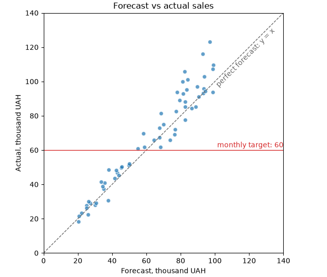
axlineне потребує меж: пряма продовжується до країв графіка за будь-якихxlim/ylim;aspect="equal"— однаковий масштаб осей, щоб діагональy = xсправді йшла під 45°;transform_rotates_text=True— кут підпису рахується в координатах даних, тому текст лягає паралельно лінії;- підпис цільового значення прив'язаний до правого краю (
xy=(1, target)у змішаних координатах) і не залежить відxlim.
Шрифти і текст у збережених файлах¶
Графіки для звіту зберігають у векторних форматах (svg, pdf), щоб вони не розмивалися при масштабуванні. Кілька параметрів визначають, як у такий файл потрапляє текст:
| Параметр | Значення | Що дає |
|---|---|---|
svg.fonttype |
"path" (за замовчуванням) |
літери перетворюються на криві: вигляд гарантовано однаковий, але текст не редагується і не шукається |
svg.fonttype |
"none" |
текст лишається текстом: його можна виправити в редакторі, але на іншому комп'ютері без шрифту він виглядатиме інакше |
pdf.fonttype |
42 |
шрифт TrueType вбудовується в PDF; цього вимагають деякі видавництва і журнали |
import matplotlib.pyplot as plt
plt.rcParams["svg.fonttype"] = "none"
plt.rcParams["pdf.fonttype"] = 42
fig, ax = plt.subplots(figsize=(6, 3.5), layout="constrained")
ax.bar(["A", "B", "C"], [5, 7, 3], color="tab:blue")
ax.set_title("Editable text in SVG")
fig.savefig("chart.svg")
fig.savefig("chart.pdf")
# прозорий фон - для вставки на кольоровий слайд
fig.savefig("chart.png", dpi=200, transparent=True)
print("saved: chart.svg, chart.pdf, chart.png")
Розмір шрифту в пунктах — фізичний розмір на папері відносно figsize у дюймах. Тому для звіту краще одразу задати figsize під реальну ширину сторінки (наприклад, 6.5 дюйма для A4 з полями) і font.size 9–11, ніж зберегти велику фігуру і потім зменшити картинку: при зменшенні шрифт стане дрібним.
Приклад: графік до і після¶
Зберемо прийоми лекції разом. Дані — середній час завантаження сторінки сайту за тиждень для чотирьох регіонів, з ціллю 2 секунди.
Графік «за замовчуванням»:
import matplotlib.pyplot as plt
import numpy as np
rng = np.random.default_rng(42)
days = np.arange(1, 29)
regions = ["Europe", "North America", "Asia", "South America"]
base = {"Europe": 1.4, "North America": 1.6, "Asia": 2.3, "South America": 2.0}
load_time = {r: base[r] + rng.normal(0, 0.12, size=28) for r in regions}
load_time["Asia"][14:] -= np.linspace(0, 0.9, 14) # з 15-го дня: CDN в Азії
fig, ax = plt.subplots(figsize=(9, 4.5))
for r in regions:
ax.plot(days, load_time[r], label=r)
ax.axhline(2)
ax.legend()
ax.set_title("Load time")
plt.show()
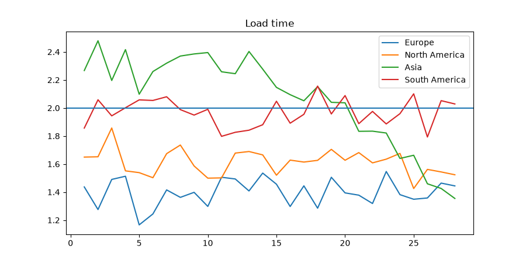
Що тут не так: незрозуміло, про що графік; чотири кольори однакової ваги; легенда перекриває дані; лінія цілі нічим не підписана; не видно, що сталося на 15-й день.
Той самий графік після оформлення:
import matplotlib.pyplot as plt
import numpy as np
rng = np.random.default_rng(42)
days = np.arange(1, 29)
regions = ["Europe", "North America", "Asia", "South America"]
base = {"Europe": 1.4, "North America": 1.6, "Asia": 2.3, "South America": 2.0}
load_time = {r: base[r] + rng.normal(0, 0.12, size=28) for r in regions}
load_time["Asia"][14:] -= np.linspace(0, 0.9, 14) # з 15-го дня: CDN в Азії
target = 2.0
highlight = "Asia"
accent = "#D55E00"
# вертикальний зсув підписів у пунктах, щоб вони не налізали один на одного
nudge = {"Europe": 0, "North America": 5, "Asia": -5, "South America": 0}
plt.rcParams.update({
"font.size": 10,
"axes.spines.top": False,
"axes.spines.right": False,
"axes.titlelocation": "left",
"axes.axisbelow": True,
})
fig, ax = plt.subplots(figsize=(9, 4.5), layout="constrained")
# сітка: лише горизонтальна, світла
ax.grid(axis="y", color="0.9")
# фонові лінії сірим, виділена - акцентним кольором поверх
for r in regions:
is_main = r == highlight
ax.plot(days, load_time[r],
color=accent if is_main else "0.7",
linewidth=2.6 if is_main else 1.3,
zorder=3 if is_main else 2)
ax.annotate(r, xy=(days[-1], load_time[r][-1]), xytext=(6, nudge[r]),
textcoords="offset points", va="center",
color=accent if is_main else "0.5",
fontweight="bold" if is_main else "normal")
# ціль: опорна лінія з підписом біля лівого краю
ax.axhline(target, color="0.3", linestyle="--", linewidth=1)
ax.annotate(f"target {target:.0f} s", xy=(0, target), xycoords=ax.get_yaxis_transform(),
xytext=(4, 4), textcoords="offset points", color="0.3", fontsize=9,
bbox={"boxstyle": "square,pad=0.1", "fc": "white", "ec": "none"})
# подія: вертикальна лінія з підписом біля верху
ax.axvline(15, color=accent, linewidth=1, alpha=0.5)
ax.annotate("CDN launched\nin Asia", xy=(15, 0.97), xycoords=ax.get_xaxis_transform(),
xytext=(6, 0), textcoords="offset points", va="top",
color=accent, fontsize=9,
bbox={"boxstyle": "round,pad=0.3", "fc": "white", "ec": "none"})
fig.suptitle("Asia now loads faster than the target", x=0.02, ha="left",
fontsize=15, fontweight="bold")
ax.set_title("Average page load time by region, seconds, last 28 days",
color="0.4", fontsize=10.5, pad=10)
ax.set(xlabel="Day", xlim=(1, 28), ylim=(1, 2.8))
ax.tick_params(colors="0.4")
fig.text(0.02, 0.01, "Source: synthetic monitoring, 5-minute checks",
fontsize=8, color="0.5")
fig.get_layout_engine().set(h_pad=0.12)
plt.show()
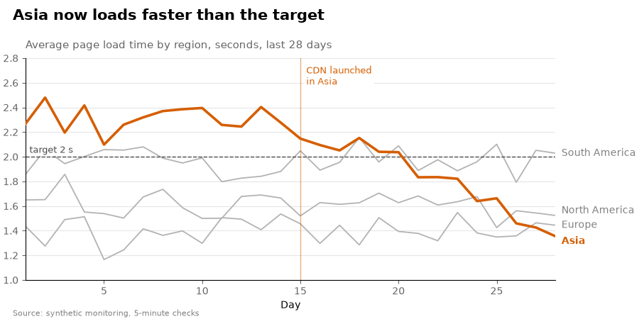
Що змінилося:
| Проблема | Рішення |
|---|---|
| незрозуміло, про що графік | заголовок-висновок + сірий підзаголовок з одиницями |
| усі лінії однакові | сірі фонові лінії, одна акцентна (zorder=3) |
| легенда перекриває дані | прямі підписи біля кінців ліній |
| ціль без пояснення | пунктир + підпис у змішаних координатах |
| причина зміни невідома | вертикальна лінія події з підписом у рамці |
| важка рамка і сітка | без верхньої/правої рамки, лише світла горизонтальна сітка під даними |
| немає джерела | примітка fig.text у нижньому куті |
Загальні налаштування винесені в plt.rcParams.update(...) — у реальному проєкті їх переносять у файл .mplstyle (лекція 37), і всі графіки звіту отримують однаковий вигляд.
Типові помилки¶
Веселка кольорів для категорій. 8 яскравих кольорів однакової ваги — читач не знає, куди дивитися. Виділіть головне одним кольором, решту — сірим.
Колір — єдина відмінність між лініями. Для людей з порушенням кольорового зору і на чорно-білому друку лінії зливаються. Додайте стиль лінії, маркер або прямий підпис; використовуйте палітри Okabe-Ito, tableau-colorblind10, petroff10.
Різні кольори для однієї сутності на різних графіках. «Дохід» синій на одному графіку і зелений на іншому. Тримайте кольори у словнику і беріть їх звідти.
Компоненти RGB від 0 до 255. color=(42, 157, 143) — помилка; matplotlib очікує числа від 0 до 1: (42/255, 157/255, 143/255) або hex "#2a9d8f".
Число замість рядка для сірого. color=0.5 — помилка, color="0.5" — сірий.
Неперервна карта для офіційних рівнів. Якщо в даних є межі (норма, рівні ризику, оцінки), використовуйте ListedColormap + BoundaryNorm.
Сітка поверх стовпчиків. ax.set_axisbelow(True) або rcParams["axes.axisbelow"] = True.
Надто помітна сітка. Сітка — допоміжний шар: світло-сіра ("0.85"–"0.92"), тонка, лише за потрібною віссю.
Формули без raw-рядка. "$\tau$" — Python перетворить \t на табуляцію. Пишіть r"$\tau$". У f-рядках з формулами — rf"..." і подвоєні {{ }}.
Анотації в координатах даних для «службових» підписів. Підпис події, ліміту, примітка в куті, задані в координатах даних, з'їжджають або зникають при зміні ylim. Використовуйте "axes fraction", get_xaxis_transform(), get_yaxis_transform().
Повернуті підписи без ha="right". Повернутий підпис зміщується на сусідню поділку. rotation=30, ha="right", rotation_mode="anchor" або barh.
Шрифт без кирилиці. У звітах українською — квадратики замість літер. Перевіряйте, що обраний шрифт містить кирилицю.
Велика фігура, зменшена у звіті. Шрифт стає нечитабельним. Задавайте figsize під реальну ширину сторінки.
Підсумок¶
- Шари важливості: дані → акценти → контекст → допоміжне. Посилюйте дані, послаблюйте рамку, сітку і легенду.
- Формати кольору:
"tab:blue", CSS-назви, hex"#rrggbb[aa]", RGB(A) 0..1,"0.6"— сірий,"C0"— колір циклу; перетворення —matplotlib.colors.to_hex,to_rgba. - Палітри:
mpl.colormaps["tab10"].colors;nкольорів з неперервної карти —cmap(np.linspace(0, 1, n)); доступні палітри — Okabe-Ito, стиліtableau-colorblind10,petroff10. - Акцент: сірі фонові елементи + один яскравий колір + прямий підпис замість легенди.
- Шари:
zorder(більший — вище),ax.set_axisbelow(True), біла обводка і порожні маркери;alpha— для перекриття, а не для «світлішого кольору». - Власні карти:
ListedColormap— дискретна,LinearSegmentedColormap.from_list— неперервна;.reversed(),.resampled(n). - Нормування:
BoundaryNorm— офіційні рівні;TwoSlopeNorm(vcenter=0)— несиметричні дані з центром;LogNorm— кілька порядків величини. - Лінії і маркери: штрихи
(0, (on, off)),mfc,mec,markevery,drawstyle. - Стилі:
plt.style.library[name]— що змінює стиль; накладання стилів списком;seaborn-v0_8-paper/notebook/talk/poster— масштаб під носій. - Шрифти:
fontsize,fontweight,fontstyle,fontfamily; відносні розміри відfont.size;rcParams["font.sans-serif"]— список з запасними;font_manager.fontManager.addfont— власний.ttf; кирилиця має бути в шрифті. - Формули:
r"$...$",^,_,\frac,\sum, грецькі літери;mathtext.fontset. - Заголовки:
fig.suptitle(x=0.02, ha="left"),set_title(loc="left", pad=...), приміткаfig.text; заголовок-висновок. - Підписи поділок:
rotation=30, ha="right", rotation_mode="anchor"абоbarh;tick_params(labelsize=..., labelcolor=...). - Сітка:
grid(axis=..., which=..., color=..., linewidth=...),minorticks_on,set_minor_locator; лише потрібна вісь, світла, під даними. - Анотації:
xycoords/textcoords:"data","axes fraction","offset points", змішаніget_xaxis_transform()/get_yaxis_transform();arrowstyle,connectionstyle;bboxдля читабельності. - Опорні лінії:
axhline,axvline,axline(..., slope=...)з підписами. - Збереження:
svg.fonttype = "none"— редагований текст,pdf.fonttype = 42,transparent=True;figsizeпід реальну ширину сторінки.
Корисні посилання¶
- matplotlib: Specifying colors
- matplotlib: Choosing Colormaps
- matplotlib: Creating Colormaps
- matplotlib: Colormap normalization
- matplotlib: Style sheets reference (gallery)
- matplotlib: Customizing with style sheets and rcParams
- matplotlib: Text properties and layout
- matplotlib: Fonts in matplotlib
- matplotlib: Writing mathematical expressions
- matplotlib: Annotations
- matplotlib: Linestyles (gallery)
- Okabe & Ito: Color Universal Design
Знайшли помилку чи бажаєте додати інформацію, щоб покращити курс? Створіть issue на GitHub